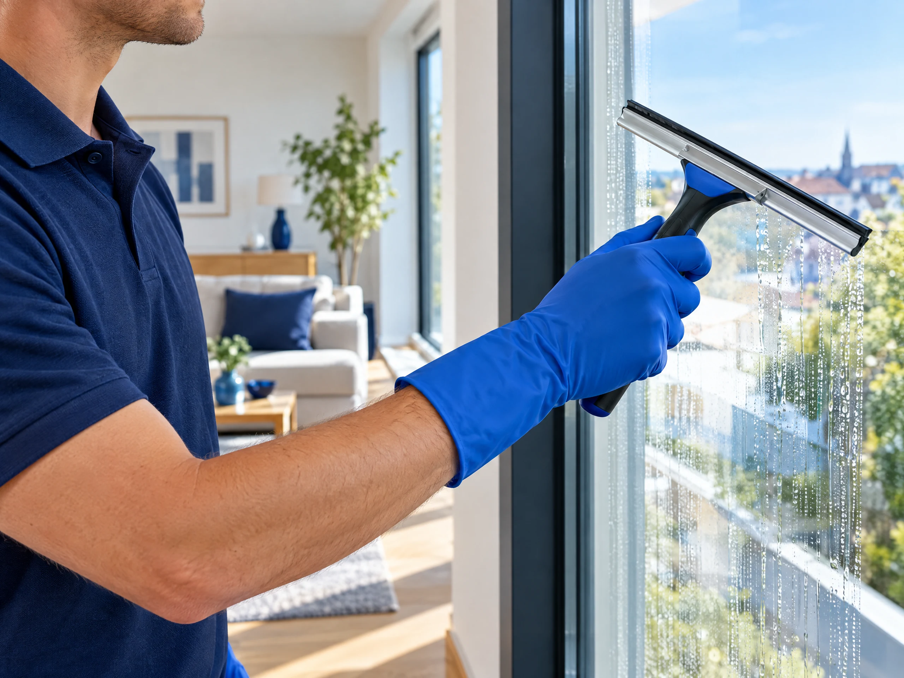

Erzählen Sie uns davon.
Welche Unterstützung brauchen Sie, wo und wann? Ein paar Angaben reichen für den Anfang.
R. Tasholli · Kirchzarten
Reinigung, Umzüge & Gartenpflege.
Persönlich für Sie da. Vom ersten Gespräch
bis zum letzten Handgriff.
Zuhause. Im Unternehmen. Draußen.
Aus Kirchzarten.Saubere Räume, ein gut organisierter Umzug und ein gepflegter Garten: Wir übernehmen die Aufgaben, die im Alltag Zeit brauchen. Einmalig oder regelmäßig. So, wie Sie es benötigen.
Unsere Leistungen entdeckenDrei Leistungen. Ein Kontakt.
Für Privatpersonen, Unternehmen und Einrichtungen. Gemeinsam stimmen wir ab, was zu Ihrem Auftrag gehört.

Klare Fenster. Gepflegte Räume.
Ein guter erster Eindruck.
Ein Möbelstück oder ein ganzes Zuhause.
Wir bringen Bewegung in Ihr Vorhaben.
Ein schöner Platz im Grünen.
Zum Ankommen und Abschalten.
Fenster & Glas · Haus & Wohnung · Büro & Gewerbe · Hallen · Schulen · Banken · Möbeltransport · Entrümpelung · Rasen & Hecken
Ein Vorhaben. Passend kombiniert.
Der Hausrat kommt mit. Die alte Wohnung wird sauber. Fragen Sie Umzug, Entrümpelung und Endreinigung gemeinsam an – mit einem Kontakt für die Abstimmung.
Klar besprochen. Sorgfältig gemacht.
Sie sagen uns, was ansteht. Wir besprechen die Details und vereinbaren einen passenden Ablauf.
Welche Unterstützung brauchen Sie, wo und wann? Ein paar Angaben reichen für den Anfang.
Umfang, Zugänge und besondere Wünsche besprechen wir passend zu Ihrem Vorhaben.
Leistungen, Kosten und Termin werden vor der Ausführung individuell mit Ihnen vereinbart.
Wir erledigen die vereinbarten Arbeiten und besprechen das Ergebnis gemeinsam mit Ihnen.
R. TASHOLLI
REINIGUNG & UMZÜGER. Tasholli · Persönlicher Service
Reinigung, Umzüge und Gartenpflege gehören für uns zusammen: Es geht um die Orte, an denen Sie leben und arbeiten. Und darum, Ihnen Aufgaben abzunehmen.
Was Sie benötigen, besprechen Sie direkt mit uns. Unser Anspruch: zuverlässig, gründlich, pünktlich und sorgfältig arbeiten.
Vor Ihrer Anfrage
Was Sie vorab wissen möchten – und was wir am besten persönlich besprechen.
Ja. Reinigung, Umzug, Möbeltransport, Entrümpelung und Gartenpflege können gemeinsam angefragt werden. Wir stimmen Umfang, Termine und Kosten passend zueinander ab.
Die Kosten hängen vom Auftrag ab: bei Reinigung etwa von Fläche und Zustand, beim Umzug von Hausrat, Strecke und Zugängen, bei Gartenpflege von Fläche und Pflegeaufwand. Sie erhalten eine individuelle Abstimmung statt eines pauschalen Onlinepreises.
Unser Standort ist Hohgasse 5 in 79199 Kirchzarten. Nennen Sie uns den Einsatzort oder Start und Ziel Ihres Umzugs. Ob wir den Auftrag dort übernehmen können, klären wir mit Ihnen.
Sie können sowohl einen einzelnen Einsatz als auch eine regelmäßige Betreuung anfragen. Das passende Intervall und verfügbare Termine werden mit Ihnen vereinbart.
Der Anfrage-Assistent bereitet aus Ihren Angaben einen E-Mail-Entwurf vor. Sie prüfen die Nachricht in Ihrem eigenen E-Mail-Programm und senden sie selbst ab. Alternativ erreichen Sie uns telefonisch.
Ihre Zeit ist wertvoll.
Was dürfen wir für Sie übernehmen?
Erzählen Sie uns von Ihrem Vorhaben.